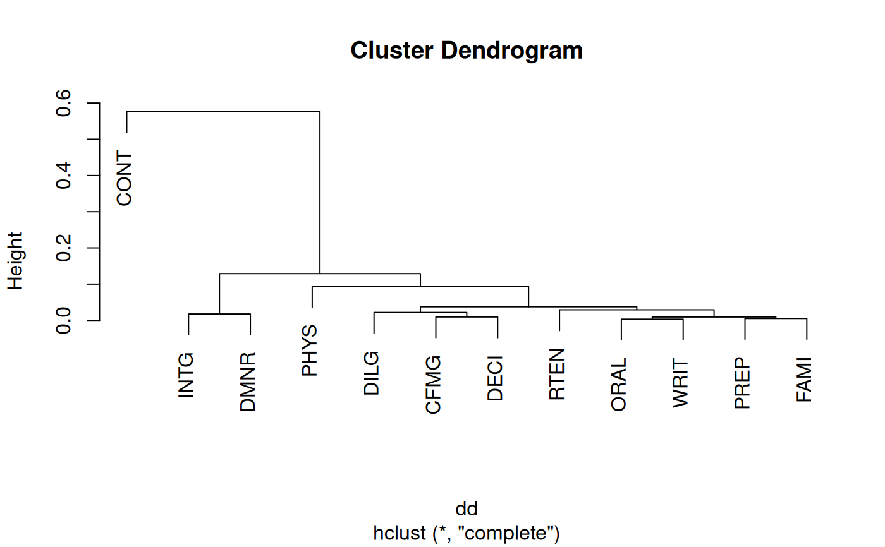

Distance Matrix Computation
dist.RdThis function computes and returns the distance matrix computed by using the specified distance measure to compute the distances between the rows of a data matrix.
Arguments
- x
a numeric matrix, data frame or
"dist"object.- method
the distance measure to be used. This must be one of
"euclidean","maximum","manhattan","canberra","binary","minkowski", or"jaccard". Any unambiguous substring can be given.- diag
logical value indicating whether the diagonal of the distance matrix should be printed by
print.dist.- upper
logical value indicating whether the upper triangle of the distance matrix should be printed by
print.dist.- p
The power of the Minkowski distance.
Details
Available distance measures are (written for two vectors \(x\) and \(y\)):
euclidean:Usual square distance between the two vectors (2 norm).
maximum:Maximum distance between two components of \(x\) and \(y\) (supremum norm)
manhattan:Absolute distance between the two vectors (1 norm).
canberra:\(\sum_i |x_i - y_i| / |x_i + y_i|\). Terms with zero numerator and denominator are omitted from the sum and treated as if the values were missing.
This is intended for non-negative values (e.g. counts): taking the absolute value of the denominator is a 1998 R modification to avoid negative distances.
binary:(aka asymmetric binary): The vectors are regarded as binary bits, so non-zero elements are ‘on’ and zero elements are ‘off’. The distance is the proportion of bits in which only one is on amongst those in which at least one is on.
minkowski:The \(p\) norm, the \(p\)th root of the sum of the \(p\)th powers of the differences of the components.
jaccard:The proportion of items that are not in both sets. For binary data, the output is equal to dist(method ="binary")
Missing values are allowed, and are excluded from all computations
involving the rows within which they occur.
Further, when Inf values are involved, all pairs of values are
excluded when their contribution to the distance gave NaN or
NA.
If some columns are excluded in calculating a Euclidean, Manhattan,
Canberra or Minkowski distance, the sum is scaled up proportionally to
the number of columns used. If all pairs are excluded when
calculating a particular distance, the value is NA.
The "dist" method of as.matrix() and as.dist()
can be used for conversion between objects of class "dist"
and conventional distance matrices.
Value
dist returns an object of class "dist".
The lower triangle of the distance matrix stored by columns in a
vector, say do. If n is the number of
observations, i.e., n <- attr(do, "Size"), then
for \(i < j \le n\), the dissimilarity between (row) i and j is
do[n*(i-1) - i*(i-1)/2 + j-i].
The length of the vector is \(n*(n-1)/2\), i.e., of order \(n^2\).
The object has the following attributes (besides "class" equal
to "dist"):
- Size
integer, the number of observations in the dataset.
- Labels
optionally, contains the labels, if any, of the observations of the dataset.
- Diag, Upper
logicals corresponding to the arguments
diagandupperabove, specifying how the object should be printed.- call
optionally, the
callused to create the object.- method
optionally, the distance method used; resulting from
dist(), the (match.arg()ed)methodargument.
References
Becker, R. A., Chambers, J. M. and Wilks, A. R. (1988) The New S Language. Wadsworth & Brooks/Cole.
Mardia, K. V., Kent, J. T. and Bibby, J. M. (1979) Multivariate Analysis. Academic Press.
Borg, I. and Groenen, P. (1997) Modern Multidimensional Scaling. Theory and Applications. Springer.
Examples
x <- matrix(rnorm(100), nrow=5)
dist(x)
#> 1 2 3 4
#> 2 6.322187
#> 3 4.439208 6.749762
#> 4 7.202898 7.708108 6.358277
#> 5 7.079079 5.581073 6.751528 9.151423
dist(x, diag = TRUE)
#> 1 2 3 4 5
#> 1 0.000000
#> 2 6.322187 0.000000
#> 3 4.439208 6.749762 0.000000
#> 4 7.202898 7.708108 6.358277 0.000000
#> 5 7.079079 5.581073 6.751528 9.151423 0.000000
dist(x, upper = TRUE)
#> 1 2 3 4 5
#> 1 6.322187 4.439208 7.202898 7.079079
#> 2 6.322187 6.749762 7.708108 5.581073
#> 3 4.439208 6.749762 6.358277 6.751528
#> 4 7.202898 7.708108 6.358277 9.151423
#> 5 7.079079 5.581073 6.751528 9.151423
m <- as.matrix(dist(x))
d <- as.dist(m)
stopifnot(d == dist(x))
## Use correlations between variables "as distance"
dd <- as.dist((1 - cor(USJudgeRatings))/2)
round(1000 * dd) # (prints more nicely)
#> CONT INTG DMNR DILG CFMG DECI PREP FAMI ORAL WRIT PHYS
#> INTG 567
#> DMNR 577 18
#> DILG 494 64 82
#> CFMG 432 93 93 21
#> DECI 457 99 98 22 9
#> PREP 494 61 72 11 21 21
#> FAMI 513 66 79 21 32 29 5
#> ORAL 506 44 47 23 25 26 8 9
#> WRIT 522 46 53 20 29 27 7 5 3
#> PHYS 473 129 106 94 60 64 76 78 54 72
#> RTEN 517 31 28 35 36 38 25 29 9 16 47
plot(hclust(dd)) # to see a dendrogram of clustered variables

## example of binary and canberra distances.
x <- c(0, 0, 1, 1, 1, 1)
y <- c(1, 0, 1, 1, 0, 1)
dist(rbind(x,y), method= "binary")
#> x
#> y 0.4
## answer 0.4 = 2/5
dist(rbind(x,y), method= "canberra")
#> x
#> y 2.4
## answer 2 * (6/5)
dist(rbind(x,y), method= "jaccard")
#> x
#> y 0.4
## answer 0.4 = 2/5
## To find the names
labels(eurodist)
#> [1] "Athens" "Barcelona" "Brussels" "Calais"
#> [5] "Cherbourg" "Cologne" "Copenhagen" "Geneva"
#> [9] "Gibraltar" "Hamburg" "Hook of Holland" "Lisbon"
#> [13] "Lyons" "Madrid" "Marseilles" "Milan"
#> [17] "Munich" "Paris" "Rome" "Stockholm"
#> [21] "Vienna"
## Examples involving "Inf" :
## 1)
x[6] <- Inf
(m2 <- rbind(x,y))
#> [,1] [,2] [,3] [,4] [,5] [,6]
#> x 0 0 1 1 1 Inf
#> y 1 0 1 1 0 1
dist(m2, method="binary")# warning, answer 0.5 = 2/4
#> Warning: treating non-finite values as NA
#> x
#> y 0.5
## These all give "Inf":
stopifnot(Inf == dist(m2, method= "euclidean"),
Inf == dist(m2, method= "maximum"),
Inf == dist(m2, method= "manhattan"))
## "Inf" is same as very large number:
x1 <- x; x1[6] <- 1e100
stopifnot(dist(cbind(x ,y), method="canberra") ==
print(dist(cbind(x1,y), method="canberra")))
#> 1 2 3 4 5
#> 2 2
#> 3 1 2
#> 4 1 2 0
#> 5 2 2 1 1
#> 6 1 2 1 1 2
## 2)
y[6] <- Inf #-> 6-th pair is excluded
dist(rbind(x,y), method="binary") # warning; 0.5
#> Warning: treating non-finite values as NA
#> x
#> y 0.5
dist(rbind(x,y), method="canberra") # 3
#> x
#> y 3
dist(rbind(x,y), method="maximum") # 1
#> x
#> y 1
dist(rbind(x,y), method="manhattan")# 2.4
#> x
#> y 2.4